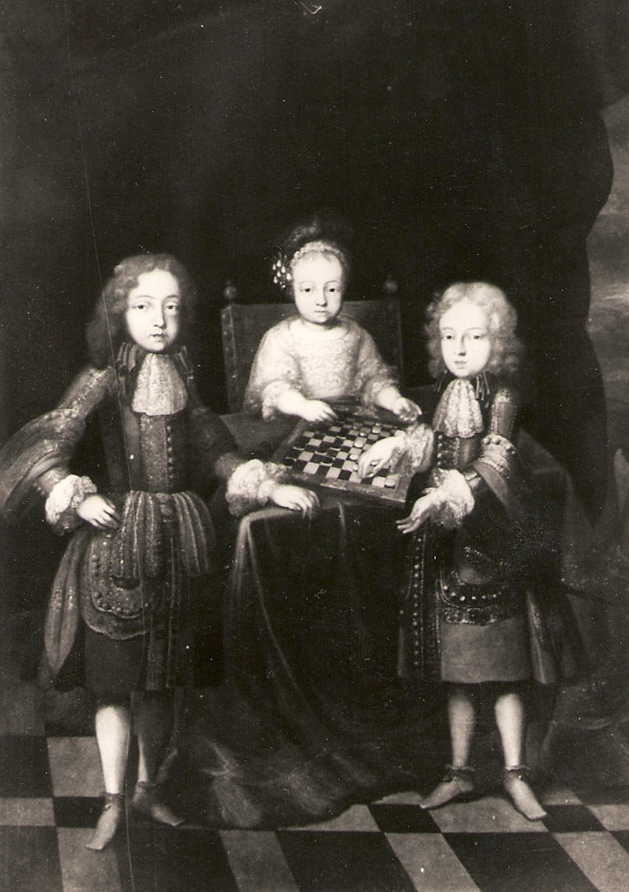
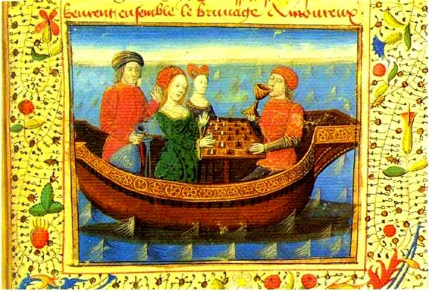
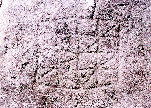

History of Draughts
By Arie van der Stoep.
 World-wide, many draughts players use a board with 64 squares. Current world champion Alexander Schwarzman (left) in 2009 against his challenger Alexander Georgiev are playing on a 100 squares board. Where does this board come from?
World-wide, many draughts players use a board with 64 squares. Current world champion Alexander Schwarzman (left) in 2009 against his challenger Alexander Georgiev are playing on a 100 squares board. Where does this board come from?
Perhaps from the Netherlands - but we should take in mind that no research is done in Germany and in Middle and Northern Europe and that another origin cannot be excluded. From the 14th century until the second half of the 16th century, the Dutch played draughts on 64 squares. Between 1550 and 1600 the Dutch started playing on 100 squares, the rules remained unchanged. In those days people exclusively played rapid games, and a game on 100 squares is more exciting, the players make a mistake more easily.
At first, the Dutch played with 2x15 pieces. Somewhere between 1650 and 1700 the number of pieces was extended to 2x20; Polish draughts was born. Actually this was a nickname, for Dutch people used the word Polish for all kinds of matters that were wrong. If you were under the suspicion of a crime and you pled not guilty, you were tied on a Polish buck and tortured. Even if you were innocent you soon confessed whatever crime. From the poor girl which had got pregnant and was left in the lurch by her lover it was said that she had to break a Polish wind. The Dutch called a bedlam a Polish conservation. Apparently not every player liked playing with 2x20 pieces, in their eyes this was odd.
The transfer from 64 squares to 100 squares on the contrary seems to have been an immediate success, for in 1617 a Dutchman living in the North wrote that all people around played draughts on 100 squares.
 Polish draughts found its way to other countries. To France, for example. These three little boys are playing the game in Versailles, the palace of their grandfather Louis XIV. The player right went far, he is the future Spanish king Philip V.
Polish draughts found its way to other countries. To France, for example. These three little boys are playing the game in Versailles, the palace of their grandfather Louis XIV. The player right went far, he is the future Spanish king Philip V.
The French court played draughts, not chess. In the 17th century, chess was a rather unknown game. A very limited number of French people played it, draughts was much more popular. In Holland chess was practically unknown; the Dutch discovered it between 1750 and 1800. Then chess rapidly gained in popularity, and in Holland chess became more popular than draughts, especially in the better social classes. From this time on we see that chess players looked down their nose at draughts, they considered their game to be far more sophisticated. This prejudice -for that it is- is rather ingrained, still in our days, also in other countries. Take in mind that this social appreciation of chess and draughts is a rather new phenomenon.
Before say 1850 the picture of princes playing draughts was far from unusual. The game was a recreation for people who could plan their days, people with a coachman, servants, a cook, a gardener. The personnel did not play draughts. In the army we see the same: officers played draughts (and in some countries chess), soldiers played dice and cards.
 Further back in the time
Further back in the time
So, in 1550 European people played draughts on 64 squares. Probably in Asia and Africa too. Also in America? We don't know.
MOR Here a German (left) is playing draughts with a Fleming or a Frenchman. Draughts? Rather chess! No, draughts. Elector John Frederick of Saxony was arrested by Emperor Charles V and confined at Brussels. He is playing draughts with chess pieces with his warder, it is clearly a draughts position. Again: draughts was a pastime of sovereigns. The tableau was depicted by the Dutch painter Antonis Mor in 1549.
European people have played draughts on 64 squares from the 14th century onwards, say from 1350. You were not obliged to take, that rule was invented in an unknown European country one age later. Draughts with "free" capture has lived on into the 17th century. So, John Frederick could have played draughts with or without the obligation to take.
The same is true for this young woman and young man, a miniature in a French manuscript from 1470. The woman is an Irish princess, her opponent a high ranking nobleman who guides her to her future spouse, a king. You see, the pieces are chess pieces, but the pattern on the board is a draughts position.
Draughts on the 64 squares board, what is its origin? It is unknown. We only know that in any European country in the 14th century the game was transferred from a lined board to the chess board.  In France this "new" game received a new name: jeu de dames.
In France this "new" game received a new name: jeu de dames.
Draughts on the lined board was a favourite game, certainly in France. In books and on sites we read that chess was the popular board games of the Middle Ages, but there are reasons to doubt whether this is a reliable sketch. Recent historical investigations in France, England and Spain yield the same picture: draughts was a much more important game than chess.
Books and sites offer more information we must regard as outmoded. The game on the lined board is called alquerque. Alquerque was a game without promotion, so without the rule to get kings, you can read everywhere. All those books and sites are parroting each other, they swallow information without any research.

Early draughts
These two men, living at a royal court, are playing draughts on the lined board, Spain 1283. In which civilisations before this time, and for how many ages, two players have bent over this type of board? We don't know. In 500 AD, that is almost certain. Maybe earlier, for the board was carved into stone. But it is always a problem for archaeologists to determine the age of a carving. For this reason we must conclude: it is very plausible that draughts was played about 500. But the game can be more ancient, but how old it is we don't know. Just as little as where it originates, in a region in the Roman or in a region in the Arab sphere of influence.